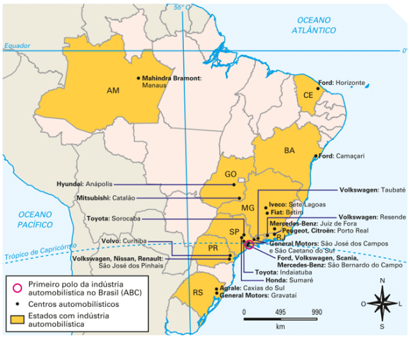
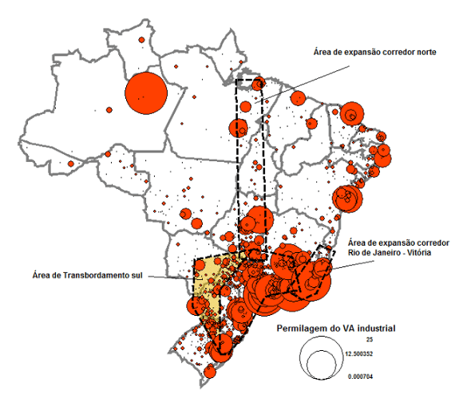
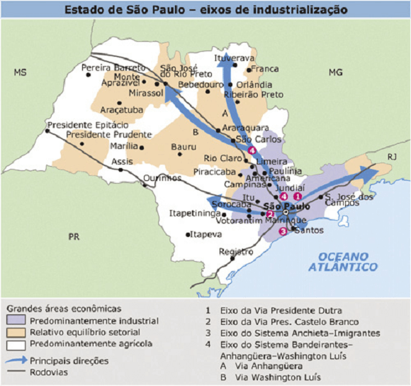
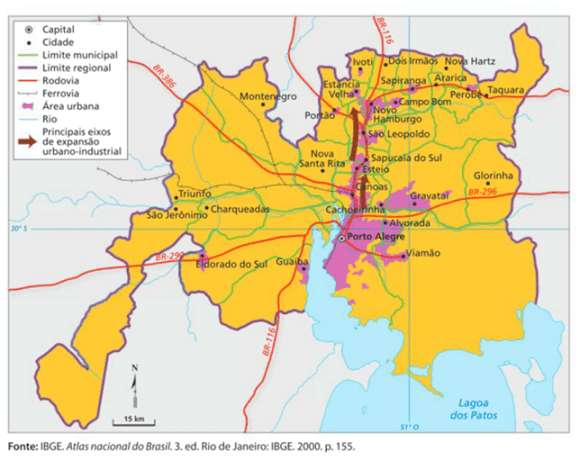
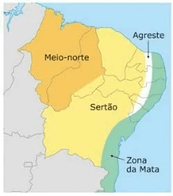

Conteúdo: Integração do território nacional; Fatores da industrialização; Concentração
Industrial; Desconcentração Industrial;
Objetivo: Entender o processo de industrialização do Brasil. Identificar os fatores da
integração do território nacional. Analisar a dinâmica da concentração e desconcentração de indústrias no
país.
Digite seu nome
Introdução
Na aula passada, vimos o histórico do processo de industrialização do
Brasil.
Hoje, veremos a economia e o território, bem como os fatores para a concentração e desconcentração industrial
nas regiões brasileiras no atual período.
Ao final, você saberá algumas causas e consequências envolvidos na dinâmica de dispersão das indústrias pelo
país.
Questões para serem respondidas no caderno sobre o tema da aula de hoje:
1. Quais são alguns problemas enfrentados pela indústria brasileira atualmente?
2. O que é o desemprego estrutural?
3. O que levou ao início da chamada "guerra fiscal"?
4. Quais são algumas causas da desconcentração industrial no Brasil?
5. Quais são algumas consequências da desconcentração industrial?
6. O que é um tecnopolo?
7. O que é a teoria da localização industrial?
A indústria brasileira e o cenário global
A dinâmica do espaço mundial é extremamente importante para o entendimento do que se passa no Brasil. Isso
porque há um movimento de readequação da produção em escala internacional, onde as empresas (multinacionais)
procuram por localidades que possuam custos mais baixos (salários, infraestrutura).
A indústria brasileira enfrenta alguns problemas fundamentais no período atual com repercussões diretas em
seu território, como exemplo: falta de infraestrutura adequada, os desafios da revolução técnico-científica
e a competição no mercado global.
Essas características globais acabaram influenciando a política e a economia brasileira que foi marcada por
uma integração nacional não muito “integrada”, mas com regiões isoladas umas das outras durante séculos.
O Brasil precisou se adaptar e com isso aderiu ao processo de liberalização de sua economia, ou seja, reduziu
o Estado em relação às medidas de proteção de seu mercado interno.
A abertura da economia levou a uma onda de novos investimentos estrangeiros diretos, possibilitando a
retomada do crescimento industrial dentro da nova lógica produtiva e não mais daquela de substituição de
importações. As indústrias instaladas no país desde 1990 fazer parte das chamadas cadeias
produtivas.
×
Cadeias produtivas: consiste em várias etapas produtivas pelas quais diversos
insumos passam e são transformados em diferentes regiões do mundo, resultando em crescente
divisão internacional do trabalho e em maior interdependência entre as economias.
Hoje as indústrias dispõem de pequenas unidades produtivas com reduzida mão de obra e com a utilização
intensa de tecnologia. Com essas características, elas podem abrir ou fechar suas unidades mais facilmente
em qualquer parte do globo.
As primeiras consequências desse processo no Brasil repercutiu na política de privatizações e no processo de
desconcentração industrial.
A política de privatizações
A ampliação da venda das estatais, ou a estruturação da política de privatizações se intensificou a partir
da década de 1990. No governo Fernando Henrique Cardoso (1995-1998), primeiro mandato, os setores incluídos
nesse política foram: infraestruturas de energia, transporte e telecomunicações, que eram antes
monopolizados pelo Estado, entre elas a Companhia Vale do Rio Doce.
A compra no exterior de máquinas e equipamentos industriais de última geração possibilitou modernizar o
parque industrial e aumentar a produtividade, mas, por outro lado, acarretou o desemprego
estrutural.
×
O desemprego estrutural é caracterizado pela modernização das atividades produtivas e de consumo
por meio da inserção de ferramentas tecnológicas na produção econômica. Ele é causado, em
especial, pela substituição da mão de obra humana por máquinas e equipamentos diversos.
Diferentemente do desemprego conjuntural, que se relaciona a um determinado contexto, o
desemprego estrutural representa uma mudança permanente das atividades produtivas.
Houve uma melhoria na qualidade dos produtos nacionais, pois deviam concorrer com mercadorias importadas e os
preços foram beneficiando consumidores. Essa abertura econômica, portanto, provocou um aumento no número de
empresas multinacionais e uma diversificação de marcas, além de uma dispersão espacial das fábricas, que
saíram do núcleo de São Paulo no Sudeste em busca de melhores condições pelo território brasileiro. Veja o
mapa:
Brasil: principais centros da indústria automobilística - 2014

O desenvolvimento dos meios de transporte, comunicações, energia, aliado a grande concentração populacional,
a organização dos trabalhadores, além do aumento do preço do solo urbano, levaram as empresas a procurarem
locais mais vantajosos para o aumento de seus lucros. O Estado contribui promovendo incentivos fiscais,
transformando o território em uma verdadeira "guerra de lugares". Entretanto, mesmo que algumas indústrias
tenham se transferidos para outras regiões, o Centro-Sul ainda possui os centros de decisão da economia.
A desconcentração industrial e a guerra de lugares
Nesse cenário de desconcentração industrial com distribuição das indústrias pelo território, há algumas
causas e consequências mais imediatas que podem ser analisadas.
A histórica concentração industrial começou a se alterar a partir da década de 1970, quando o poder público
iniciou uma série de planejamentos a fim de gerar uma maior democratização no espaço industrial do país. Uma
das medidas foi a criação da Sudam (Superintendência de Desenvolvimento da Amazônia) e da Sudene
(Superintendência de Desenvolvimento do Nordeste).
Outra ação foi a autorização do Governo Federal dada aos governos estaduais a promoverem incentivos fiscais
para a presença de indústrias em seus territórios. Com isso, teve início a chamada Guerra Fiscal ou Guerra
dos Lugares, em que as unidades federativas, por meio de isenções de impostos e outros benefícios, passaram
a competir pela manutenção de empresas em suas localidades, a fim de dinamizar suas economias e elevar a
quantidade de empregos. Soma-se a essas questões políticas o fato de que, com os avanços tecnológicos nos
meios de transporte e comunicações, não eram mais necessárias uma aglomeração industrial e, tampouco, a
proximidade entre indústria e mercado consumidor.
Por isso, muitas empresas resolveram migrar para regiões interioranas e cidades médias, longe dos problemas
relacionados às grandes cidades.
Algumas causas:
guerra fiscal;
aumento dos custos ambientais;
ampliação de impostos nas grandes cidades;
aumento do preço da terra nas áreas centrais;
problemas de tráfego na região metropolitana;
busca de áreas com fraca organização sindical;
aumento dos custos dos serviços públicos urbanos.
Algumas consequências:
incremento do setor terciário;
extinção de postos de trabalho;
aumento da taxa de desemprego;
processo de desmetropolização, ou seja, crescimento lento em relação às cidades de porte médio do
interior;
mudança do destino das correntes migratórias, voltadas agora para o interior do estado e para o
retorno de nordestinos a seu estado de origem.
Saiba mais:
“Nas condições atuais, e de um modo geral, estamos assistindo à não-política, isto é, à política feita
pelas empresas, sobretudo as maiores. Quando uma grande empresa se instala, chega com suas normas, quase
todas extremamente rígidas. Como essas normas rígidas são associadas ao uso considerado adequado das
técnicas correspondentes, o mundo das normas se adensa porque as técnicas em si mesmas também são
normas. Pelo fato de que as técnicas atuais são solidárias, quando uma se impõe cria-se a necessidade de
trazer outras, sem as quais aquela não funciona bem.
Cada técnica propõe uma maneira particular de comportamento, envolve suas próprias regulamentações e, por
conseguinte, traz para os lugares novas formas de relacionamento. O mesmo se dá com as empresas. É assim
que também se alteram as relações sociais dentro de cada comunidade. Muda a estrutura do emprego, assim
como as outras relações econômicas, sociais, culturais e morais dentro de cada lugar, afetando
igualmente o orçamento público, tanto na rubrica da receita como no capítulo da despesa. Um pequeno
número de grandes empresas que se instala acarreta para a sociedade como um todo um pesado processo de
desequilíbrio.
Todavia, mediante o discurso oficial, tais empresas são apresentadas como salvadoras dos lugares e são
apontadas como credoras de reconhecimento pelos seus aportes de emprego e modernidade. Daí a crença de
sua indispensabilidade, fator da presente guerra entre lugares e, em muitos casos, de sua atitude de
chantagem frente ao poder público, ameaçando ir embora quando não atendidas em seus reclamos. Assim, o
poder público passa a ser subordinado, compelido, arrastado. À medida que se impõe esse nexo das grandes
empresas, instala-se a semente da ingovernabilidade, já fortemente implantada no Brasil, ainda que sua
dimensão não tenha sido adequadamente avaliada. À medida que os institutos encarregados de cuidar do
interesse geral são enfraquecidos, com o abandono da noção e da prática da solidariedade, estamos, pelo
menos a médio prazo, produzindo as precondições da fragmentação da desordem, claramente visíveis no
país, por meio do comportamento dos territórios, isto é, da crise praticamente geral dos estados e dos
municípios”.
SANTOS, Milton. Por uma outra Globalização. p.33.
As regiões industrias no território brasileiro
A partir do mapa, embora a atividade industrial nos últimos anos no Brasil tenha se sofrido um processo de
desconcentração industrial, vemos que ainda as regiões Sul e Sudeste concentram a maior parte das indústrias
no país.
Brasil: distribuição do valor industrial por município – 2009

Fonte: (ABDAL, 2020).
Particularmente no Estado de São Paulo, observa-se o maior parque industrial brasileiro. A
partir da década de 1950, com a vinda das montadoras de automóveis se instalaram no chamado ABCD, nos
municípios de Santo André, São Bernardo do Campo, São Caetano do Sul e Diadema, na região metropolitana de
São Paulo, isso impulsionou fortemente a industrialização desse Estado.
Entretanto, a abertura econômica alterou significativamente esse região. Fábricas antigas foram fechadas ou
se transferiram para outras áreas em busca de mão de obra menos organizada (pressão dos sindicatos) e mais
barata, com menores impostos, benefícios fiscais, dentre outras razões. Soma-se a isso a diminuição dos
trabalhadores decorrente dos avanços proporcionados pela Revolução Científico-Tecnológica. A empresa
Volkswagen, por exemplo, possuía cerca de 40 mil trabalhadores na década de 1970 e atualmente reduziu esse
número para menos da metade.
Apesar das discordâncias sobre as características do processo de desindustrialização, o fato é que ele
existe. Não significa, necessariamente, uma perda de posição ou decadência econômica da metrópole de São
Paulo. O setor de serviços ainda ocupa a maior parte da mão de obra na Região Sudeste, visto que, mesmo
contendo grande parte da produção industrial, a produção tende a utilizar menos mão de obra e mais
tecnologia.
Esse processo de mudança de indústria para outras localidades ocorreu no entorno da capital paulista com
destaque para a região de Campinas, que viveu recentemente um intenso crescimento urbano decorrente do
dinamismo industrial recente. Cientistas ligados a Universidade Estadual de Campinas (Unicamp) e a outros
centros de pesquisas atraíram investimentos para a produção de equipamentos de telecomunicações e de
informática, por exemplo. A proximidade geográfica com a Grande São Paulo e as rodovias Bandeirantes e
Anhanguera facilitaram esse processo de crescimento industrial. Veja o mapa abaixo:

Há outros polos tecnológicos além de São Paulo como São José dos Campos, nas margens da via Dutra, com
indústrias químicas, farmacêuticas e aeronáutica. Esta última é ligada ao Departamento de Ciência e
Tecnologia Aeroespacial, setor da Força Aérea do Brasil que coordena esforços nas área de tecnologia, ensino
(Instituto Tecnológico Aeronáutico - ITA) e atividades aeroespaciais (Empresa Brasileira de Aeronáutica -
EMBRAER). São Carlos também se destaca com as indústrias de óptica, informática, instrumentação e mecânica
de precisão.
Ainda no Sudeste tem destaque a região do Quadrilátero Ferrífero, em Minas Gerais, bem como as instalações do
Porto de Tubarão no Espírito Santos que foram responsáveis para atrair os investimentos em
siderurgia.
×
Siderurgia é o ramo da metalurgia que se dedica à fabricação e tratamento de aços e ferros fundidos.
Essa região está localizada no sudeste de Belo Horizonte entre as cidades de Sabará, Santa Bárbara, Mariana, Congonhas, Ouro Preto, dentre outras. Completam esse cenário as indústrias siderúrgicas instaladas no vale do Rio Doce, que corre para o Norte de Minas e depois para o Leste, já no Espírito Santos, dando origem a um corredor industrial conhecido como Vale do Aço.
No Espírito Santo encontra-se indústrias de celulose, como a Suzano, integrada a vastas áreas de plantio de eucaliptos e a um porto privativo, o Portocel. Essa região é articulada com o mercado global e faz com que o Brasil ocupe uma posição de destaque como grande exportador de minérios e celulose. Santa Rita do Sapucaí é, da mesma forma, um tecnopolo onde se desenvolvem indústrias do ramo da eletrônica e das comunicações.
Na Região Sul, a região metropolitana de Curitiba possui o maior destaque, com indústrias de ponta nas áreas de informática, eletroeletrônica, mecânica de precisão, microeletrônica, biotecnologia, química fina, tecnologia de alimentos, dentre outras, além do centro de montadoras de automóveis em São José dos Pinhais. Já em Santa Catarina, a produção industrial se concentra no vale do Itajaí, principalmente em Joinville, com forte presença de atividades metalúrgicas, tecnologia de alimentos e agropecuária, e no entorno de Brusque e Blumenau de forma expressiva com o setor têxtil e de confecção. Florianópolis destaca-se na produção de itens de informática, mecânica de precisão e eletrônica.
No Rio Grande do Sul o parque industrial envolve a região metropolitana de Porto Alegre. O eixo industrial está ligado aos municípios de Canoas, Esteio, São Leopoldo e Novo Hamburgo, centro de uma das principais áreas de produção de couros e calçados do pais, conforme o mapa abaixo:

No Nordeste, antes preponderante agrícola, recebeu diversos investimentos industriais, principalmente a partir da segunda metade do século X, com forte incentivos governamentais.
Combinado com o processo de urbanização e o desenvolvimento econômico das últimas décadas, as atividades industrias se expandiram na Zona da Mata.
×
A Zona da Mata é uma sub-região que fica no litoral leste da Região Nordeste do Brasil que se estende do leste do estado do Rio Grande do Norte até o sul da Bahia, formada por uma estreita faixa de terra para os padrões continentais do Brasil. O nome “Zona da Mata” deve-se à Mata Atlântica que originalmente cobria a região, mas atualmente está quase extinta.

Na região metropolitana de Recife, por exemplo, destacam-se os municípios de Jaboatão dos Guararapes, Cabo de Santo Agostinho e Paulista. Entretanto, o maior distrito industrial está localizado no Recôncavo Baiano, onde se localizam Salvador e as indústrias dos setores petroquímico, automotivo e de autopeças de Camaçari. Além disso, Campina Grande, na Paraíba, é um importante tecnopolo, com destaque nas áreas de eletroeletrônica, informática e telecomunicações.
×
O Recôncavo Baiano é a região geográfica localizada em torno da Baía de Todos-os-Santos, abrangendo não só o litoral mas também toda a região do interior circundante à Baía.
Por fim, na Região Norte do país temos uma área criada através de incentivos fiscais: a Zona Franca de Manaus. A Zona Franca foi criada por decreto em 1967, durante a ditadura militar, como uma área de livre-comércio de importações e exportações (sem cobrança de impostos de importação), em que a grande parte das montadoras utiliza componentes estrangeiros em suas linhas de produção. As empresas instaladas nessa área recebem grandes subsídios.
Teste seu conhecimento
Um dos fatores responsáveis pelo processo de desconcentração industrial do Brasil refere-se:
Teste seu conhecimento
Com o avanço da ciência, técnica e informação surge uma nova divisão territorial do trabalho no Brasil, isso pode gerar:
Teste seu conhecimento
As principais atividades dessa região estão ligadas a siderurgia e metalurgia; petrolífera; alta tecnologia; além de setores da indústria de informática, avião e importantes centros de pesquisa do país. Trata-se da região:
Não existe pergunta boba! A Ciência é feita de perguntas!
P:
O que são tecnopolos?
R:
Alguns centros industriais desenvolvem tecnologias de ponta graças à união entre indústrias, universidades e centros de pesquisa que realizam intercâmbio de informações, em busca da excelência produtiva. Tais centros são conhecidos como tecnopolos.
P:
O que é teoria da localização industrial?
R:
A teoria da localização industrial, grosso modo, formula problemas e trabalha com os chamados fatores locacionais por meio de questões como: Qual a razão de uma indústria se instalar em um lugar e não em outro? Por exemplo, alguém pode questionar: qual a relação entre os fatores locacionais e a industrialização em São Paulo?
Os fatores locacionais como transporte, trabalho, matérias-primas, mercados, locais apropriados, serviços, atitudes governamentais, estrutura de impostos, clima, sindicatos etc interferem na localização das indústrias.
A região Sudeste, por exemplo, reuniu um conjunto de variáveis que a tornou promissora na indústria. Essa região possuía uma rede de transporte mais consolidada, linhas férreas e estradas, disponibilidade para mão de obra fabril (imigrantes) e locais apropriados com energia e matérias-primas.
P:
Qual o efeito da industrialização sobre o espaço geográfico?
R:
Tanto a industrialização como o espaço geográfico condicionam um ao outro. A industrialização promove uma maior concentração industrial, sobretudo no século XX, resultou em uma intensificação do processo de urbanização, além de um incremento do setor de serviços e uma forte pressão dos recursos naturais. Já o espaço geográfico pode oferecer recursos como minérios, solo de qualidade, planície e recursos hídricos e assim por diante.
Desafio - Jornada do herói: Aproximação da Caverna Oculta
Na aula passada, conhecemos os Testes, Aliados e Inimigos quando o herói entra para valer no Mundo Especial.
Hoje, vamos conhecer a Aproximação da Caverna Oculta, tal como os alpinistas que já subiram até um acampamento básico, por meio dos testes, e agora vão fazer o salto final ao ponto culminante.
Como sempre, formem seus grupos e use a criatividade para lidar com esse desafio.
Instruções
Forme um grupo com 5-6 estudantes;
Leia o texto abaixo e discuta com seu grupo o conteúdo das questões;
Faça anotações em seu caderno;
Seja criativo, use os conhecimentos que você já possui sobre o Desafio.
Tempo da atividade: 25 minutos.
Aproximação da Caverna Oculta (7)
Independente da experiência pregressa do herói, ele se encontra agora em um novo mundo do qual ele não
domina suas regras básicas. Veja o texto a seguir:
Leia a passagem abaixo:
“Nosso bando de Buscadores deixa o oásis, à beira do novo mundo, restaurado e armado com mais conhecimentos sobre a natureza e os hábitos das presas que estamos caçando. Estamos prontos para pressionar o coração do novo mundo, onde os maiores tesouros estão guardados por nossos maiores medos.
Olhe em volta, veja seus companheiros, os outros Busca-dores. Já mudamos. Novas energias estão emergindo. Quem é o chefe agora? Alguns que não se adaptavam ao Mundo Comum estão florescendo agora. Outros que pareciam ideais para a aventura revelam-se os menos capazes. Está se formando uma nova percepção de você mesmo e dos outros. Baseado nessa nova concepção, você pode fazer planos e se dirigir diretamente para pegar o que você está querendo do Mundo Especial. Logo vai poder entrar na Oculta”.
Neste momento da Jornada, o herói já se adaptou as regras do Mundo Especial, fez aliados e inimigos e caminha para o próprio Centro da Jornada. A Aproximação da Caverna Oculta é uma metáfora para os preparativos finais para a provação central da aventura.
Quando o herói chega nesse ponto, nas portas de uma cidadela, bem no meio do Mundo Especial, ele e seus aliados reservam um tempo para fazer planos, reconhecer os inimigos, reorganizar o grupo e assim por diante.
É como um estudante que precisa virar a noite estudando para as provas, pois chegou o dia da grande provação! Ou quando os caçadores seguem as pistas da caça até seu esconderijo. Esse é o ponto em que o herói se encontra neste momento.
Várias formas de se aproximação
O herói pode ser enganado por um suposto aliado, que na verdade se releva um espião e o atrai para uma armadilha.
Alguns heróis possui uma estratégia mais ousada e vão direto para a porta do castelo pedir para entrar. É como um detetive que suspeita de um poderoso chefão e vai diretamente confrontá-lo na tentativa de perturbar o mundo do oponente.
Em God of War Ragnarok, a aproximação da Caverna Oculta ocorre quando Kratos se torna o general e assume o comando dos seus aliados e, juntos, definem as estratégias para entrar em Asgard para enfrentar Odin.
Nessa aproximação é quando o grupo tenta reunir o máximo de informação possível, verificar suas armas, trajes para a provação que está por vir.
O mesmo ocorre em no jogo Days Gone, quando Deacon reúne sua equipe para atacar o acampamento do Coronel Garret utilizando um caminhão bomba.
Obstáculos
Nesse momento os grupo de aliados já podem observar o local da Provação, seja um acampamento, uma cidade como nos filmes de faroeste ou uma montanha. A passagem não será fácil, terá inimigos, obstáculos e desafios que unirá o grupo e vai prepara-los para a luta de vida-ou-morte que ainda virá.
O caminho, na maioria das vezes, estará bloqueado por alguém ou alguma coisa, seja uma muralha ou seguranças de uma empresa ou mesmo capangas de traficantes, como guardiões do limiar. O herói precisará contornar esses obstáculos para alcançar seu objetivo.
Quando se aproximam da Caverna Oculta, os heróis devem saber que se encontra em uma linha tênue com risco grande de falhar, Alguns aliados podem ficar pelo caminho e se sacrificar para que o herói consiga progredir na Jornada.
Os inimigos são mais fortes e os heróis podem ficar desencorajados e confusos. Este são sinais das complicações dramáticas, um teste par seguir adiante.
Sem saída
As cenas se tornam mais frenéticas, a equipe precisa ser redirecionada e avaliar tudo que está em jogo naquele momento. É o ponto alto da história.
Como estão na porta da Caverna Oculta, os heróis esperam que ela esteja fortemente defendida. Quando os heróis se veem sem saída, a aproximação da Caverna Oculta está completa.
A Aproximação reúne todos os preparativos finais para a Provação Suprema. Geralmente, traz o herói à cidadela da oposição, aquele âmago bem defendido em que terão de entrar em cena todas as lições e aliados da Jornada recebidos até agora. Novas percepções são testadas, superam-se os obstáculos finais para se chegar ao coração da aventura. Agora, a Provação Suprema pode começar.
Questões para pensar na história do jogo:
- Em sua história, o que acontece entre a entrada no Mundo Especial e a chegada à crise central naquele mundo? Que preparativos especiais conduzem até a crise?
- O conflito vai crescendo ou os obstáculos ficam mais difíceis e interessantes?
- Existe uma Caverna Oculta concreta e fixa, um quartel-general do vilão, do qual os heróis se aproximam? Ou existe alguma espécie de equivalente emocional?
ABDAL, Alexandre. Trajetórias regionais de desenvolvimento no Brasil contemporâneo: uma agenda de pesquisa.
SANTOS, Patrícia Cardoso dos (et al.). Enciclopédia do Estudante: geografia do Brasil:
aspectos físicos, econômicos e sociais. São Paulo: Moderna, 2008.
FRANK, Bruno José Rodrigues. Geografia econômica. Londrina: Editora e Distribuidora Educacional S.A., 2018.
VESENTINI, José William. Geografia: o mundo em transição. Ensino médio. 2. ed. – São
Paulo: Ática, 2013.
VOGLER, Christopher. A jornada do escritor: estruturas míticas para escritores.
Tradução de
Ana Maria Machado. -
2.ed. Rio de Janeiro: Nova Fronteira, 2006.
SKOLNICK, Evan. Video game storytelling: what every developer needs to know about
narrative
techniques.New Yoirk: Watson-Guptill, 2014.